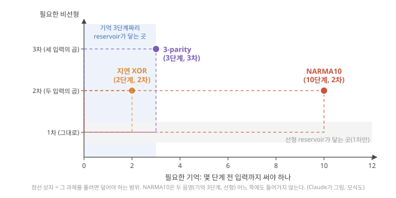
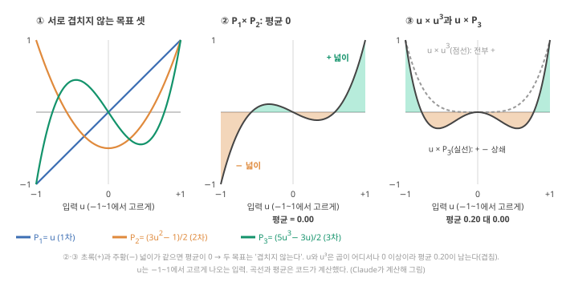
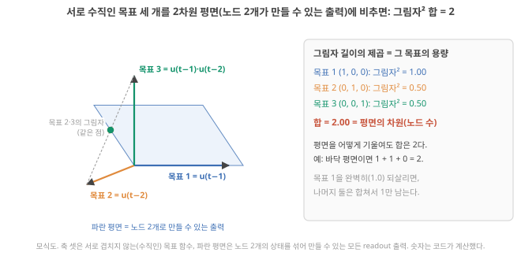

D11. memory가 길고 nonlinearity가 강할수록 좋은가?
Phase 2 · RC는 왜, 어떻게 작동하는가 · 11월 3일 (화)
답에 들어가야 할 것 — memory–nonlinearity trade-off, 총 정보처리용량이 노드 수에 묶인다는 점(IPC)
기본 경로: ① 사전 테스트(권장) → ② 학습자료(구간마다 잠깐 점검까지) → ③ 백지 회상 → ④ 가르치듯 내 답. ⓪·⑤와 접힌 '심화'·'추가 연습'은 선택입니다. 한 번에 끝낼 필요 없이 구간 단위로 나눠 읽어도 되고, 다시 열면 '지난번 읽던 곳' 링크가 뜹니다.
① 사전 테스트와 먼저 만들어 보기
아직 배우지 않은 내용을 먼저 풀어 봅니다. 많이 틀리는 것이 정상이고, 그게 목적입니다. 먼저 답해 본 문제는 읽을 때 눈에 들어오고 더 오래 남습니다. 문제마다 정답만 보이고, 이유는 학습자료와 ⑤ 다시 풀기에서 봅니다. 다 풀면 학습자료가 열립니다. 건너뛰려면 학습자료 위의 '그냥 읽기'를 누르세요(권장 단계일 뿐 필수는 아닙니다).
② 학습자료
D9에서 reservoir가 기억을 갖는 법을, D10에서 비선형을 갖는 법을 따로 보았습니다. 오늘은 둘을 함께 놓고 묻습니다. 기억은 길수록, 비선형은 강할수록 좋은가? 이 질문은 이온 소자 연구에 바로 닿습니다. "더 긴 retention(바뀐 상태가 유지되는 시간)", "더 큰 정류비(한 방향 전류 ÷ 반대 방향 전류)", "더 큰 히스테리시스(전압을 올릴 때와 내릴 때 전류가 다른 길로 가는 정도)"가 논문의 개선 목표로 자주 나오는데, 그것들이 reservoir로서 '더 좋음'을 뜻하는지가 오늘의 끝에 놓입니다.
- 기억과 비선형은 각각 무엇을 사 주나? 과제는 무엇을 요구하나?
- 둘을 같은 저울로 재는 법: 정보처리용량(IPC)이란?
- 왜 그 총량은 노드 수를 넘지 못하나? (3차원 그림자로 손 계산)
- 기억과 비선형은 정말 서로 자리를 빼앗나? (시뮬레이션)
- 노드 수가 아니라 '서로 다른' 노드 수: 같은 이온 소자를 여러 개 놓으면?
- 그래서 좋은 reservoir란 무엇인가?
1. 두 자원: 기억과 비선형
이 구간을 읽고 나면 기억(D9)과 비선형(D10)이 각각 무엇을 가능하게 하는지 한 줄씩 되짚고, NARMA10 같은 과제가 둘을 '얼마나' 요구하는지 말할 수 있다.
되짚기. D9의 fading memory: 지금 상태에 \(k\)단계 전 입력의 몫이 \(d^k\)만큼 남아, 과거가 필요한 질문("한 단계 전에 1이었나?")에 답할 수 있게 합니다. 노드 하나의 기억은 합이 1인 예산이었습니다(D9 5구간). D10의 비선형: 겹침 원리를 깨서 입력들의 곱(XOR = 두 입력의 곱, 3-parity = 세 입력의 곱)을 상태에 남겨, 선형 readout이 가중합으로는 못 만드는 답을 꺼내게 합니다.
과제는 둘을 정해진 양만큼 요구한다. D12에서 직접 돌릴 NARMA10을 미리 봅니다. NARMA10은 0~0.5 사이의 무작위 입력 \(u(t)\)를 넣고, 정해진 식 \(y(t+1) = 0.3\,y(t) + 0.05\,y(t)\sum_{i=0}^{9} y(t-i) + 1.5\,u(t-9)\,u(t) + 0.1\)로 만든 출력 \(y\)를 reservoir가 따라 하게 하는 시험 과제입니다(식은 외우지 않아도 되고, 항마다의 뜻은 D12에서 풉니다). 지금 볼 곳은 두 군데입니다. \(y(t) \times y(t-i)\)와 \(u(t-9) \times u(t)\)는 두 값의 곱이고(2차 비선형), 그 곱에 들어가는 값이 9–10단계 전까지 거슬러 갑니다(기억). Stepney도 NARMA 계열의 (2차) 비선형성이 이런 곱 항들에서 오고 이전 \(N\)개 상태의 기억도 필요하다고 씁니다. Stepney 2024, p.676 (Stepney는 출력을 \(x\), 과제의 길이를 \(N\)으로 적습니다. 이 교재에서 \(x\)는 reservoir 상태, \(N\)은 노드 수이므로 여기서는 출력을 \(y\), 길이를 10으로 바꿔 적었습니다.) 그래서 NARMA10에는 약 10단계의 기억과 2차(두 값의 곱) 비선형이 함께 필요합니다. 기억이 3단계뿐이면 아무리 비선형이 강해도 소용없고, 기억이 100단계여도 곱을 못 만들면 소용없습니다. 지연 XOR은 2단계 기억 + 2차, 3-parity는 3단계 기억 + 3차입니다(D10).

그러니 질문을 바꿔야 합니다. "기억이 길수록 좋은가?"가 아니라 "과제가 요구하는 기억과 비선형을, reservoir가 충분히 그리고 동시에 줄 수 있는가?" 이 질문에 답하려면 기억과 비선형을 같은 단위로 재는 저울이 필요합니다.
- 기억 = 지난 입력의 흔적(D9), 비선형 = 입력들의 곱·굽힘(D10). 둘은 다른 일을 한다.
- 과제는 둘을 정해진 양만큼 요구한다: NARMA10 ≈ 10단계 기억 + 2차 곱 Stepney 2024, p.676, 지연 XOR = 2단계 + 2차, 3-parity = 3단계 + 3차.
- 바른 질문: 과제가 요구하는 기억과 비선형을 동시에 줄 수 있나?
2. 정보처리용량: 목표 하나를 얼마나 되살리나
이 구간을 읽고 나면 용량 \(C = 1 - (\text{평균 제곱 오차})/(\text{목표의 분산})\)을 숫자로 계산하고, 목표 함수를 '차수'로 나눠 더하는 이유(차수 1 = 기억, 차수 2 이상 = 비선형)와 서로 겹치지 않는 목표를 쓰는 이유를 말할 수 있다.
정보처리용량(IPC)과 노드 수에 묶인 총량
왜 필요한가. 기억은 "몇 단계 전 입력을 되살리나"로, 비선형은 "XOR을 맞히나"로 따로 재면 둘을 비교할 수 없습니다. 둘을 같은 저울에 올리려면 "어떤 목표 함수든 상태에서 얼마나 잘 되살리나"라는 하나의 질문으로 바꿉니다.
목표 하나의 용량. 입력 이력으로 정해지는 목표 신호 \(f(t)\)를 하나 정합니다. 예: \(f(t) = u(t-2)\)(두 단계 전 입력, 기억을 묻는 목표), \(f(t) = u(t-1) \cdot u(t-2)\)(두 입력의 곱, 비선형을 묻는 목표). reservoir 상태로 선형 readout을 학습해(D8 기초: 최소제곱) \(f\)를 흉내 낸 값을 \(\hat{f}\)("에프 햇". 모자 표시는 '추정한 값'이라는 뜻)라 하면, 그 목표의 용량은
\[ C_f = 1 - \frac{\langle (f - \hat{f})^2 \rangle}{\mathrm{Var}(f)} \]
- 평균 기호 \(\langle \cdot \rangle\). 꺾쇠 안의 양을 시간 단계마다 계산한 뒤, 단계 수 \(n\)으로 나눈 평균입니다(시험 구간에서 냄). 예: 네 단계의 오차 \(f - \hat{f}\)가 −1, 1, −1, 1이면 제곱은 1, 1, 1, 1이고 \(\langle (f-\hat{f})^2 \rangle = 4/4 = 1\)입니다. 그래서 분자는 "오차 제곱의 평균"(평균 제곱 오차)입니다.
- 분산 \(\mathrm{Var}(f)\). 목표가 자기 평균에서 얼마나 흩어지나. 숫자 넷으로: 목표 값이 1, 2, 3, 6이면 평균은 3, 평균에서 뺀 값은 −2, −1, 0, 3, 그 제곱은 4, 1, 0, 9로 합이 14입니다. 개수 4로 나누면 분산 3.5, 표본 분산(개수−1 = 3으로 나눔)이면 약 4.67입니다. 분산의 제곱근이 표준편차입니다(이 교재의 기본은 \(n-1\)로 나눈 표본 표준편차). D11의 용량 식에서는 분산도 개수 \(n\)으로 나눕니다. 분자의 \(\langle \cdot \rangle\)가 \(n\)으로 나누니 분모도 같은 잣대로 맞추는 것이고(아래 단계 4에서 어긋나면 어떻게 되는지 봅니다), 그림 2·3의 숫자를 낸 Claude의 코드(
tools/esn.py)도 \(n\)으로 나눕니다. 시험 구간이 수천 단계라 \(n\)과 \(n-1\)의 차이는 무시할 만합니다. 정식 설명은 D13 기초: 분산·상관². - 단위: 무차원, 0~1.
- 결과의 뜻: 1이면 완벽히 되살림, 0이면 평균값만 말하는 것과 같음(D8의 NMSE를 1에서 뺀 것). Singh 2026의 3.2절 식이 이것이고, 목표 함수의 다항 차수와 그것을 만든 입력 지연으로 목표를 구별합니다. Singh 2026, p.13
네 단계로 처음부터 끝까지. 식의 조각이 실제로 어떻게 맞물리는지, 시간 네 단계짜리 장난감 예로 따라갑니다(Claude가 만든 예, 숫자는 손으로 확인 가능).
단계 1 — 목표와 상태를 적는다. 시간 네 단계에서 목표가 \(f\) = 1, 2, 3, 6이고, readout이 볼 수 있는 것은 노드 하나의 상태 \(x\) = 2, 1, 4, 5라고 합시다(D9 5구간 상관계수 예의 두 숫자 열 \(a\), \(b\)를 그대로 가져왔습니다). 선형 readout이 할 수 있는 일은 \(\hat{f} = w_0 + w_1 x\), 곧 "상태에 숫자 \(w_1\)을 곱하고 상수 \(w_0\)을 더하기"뿐입니다.
단계 2 — readout을 맞춘다(최소제곱). 오차 제곱의 합을 가장 작게 하는 \(w_1\)은 (평균을 뺀 값끼리 곱해 더한 것) ÷ (\(x\) 쪽 제곱합)입니다(D8 기초의 \(w = \sum xy / \sum x^2\)를 평균을 뺀 값에 쓴 것). 평균을 뺀 값은 \(f\): −2, −1, 0, 3, \(x\): −1, −2, 1, 2이므로 \(w_1 = (2 + 2 + 0 + 6)/(1 + 4 + 1 + 4) = 10/10 = 1\)이고, \(w_0 = (f\text{의 평균}) - w_1 \times (x\text{의 평균}) = 3 - 3 = 0\)입니다. 그래서 \(\hat{f}\) = 2, 1, 4, 5.
단계 3 — 분자: 오차 제곱의 평균. \(f - \hat{f}\) = −1, 1, −1, 1, 제곱 1, 1, 1, 1, 평균 \(\langle (f-\hat{f})^2 \rangle = 1\).
단계 4 — 분모로 나눠 1에서 뺀다. \(\mathrm{Var}(f) = 14/4 = 3.5\)(\(n\) = 4로 나눔). \(C = 1 - 1/3.5 \approx 0.714\). 목표의 흔들림 3.5 가운데 1만큼을 놓쳐, 약 71%를 되살렸다는 뜻입니다. 분모만 \(n-1\) = 3으로 나눈 4.67을 쓰면 \(1 - 1/4.67 \approx 0.786\)이 되어 다음 단계의 값과 어긋납니다. 분자와 분모를 같은 \(n\)으로 나누는 이유입니다.
단계 5 — 상관²과 비교한다. D9에서 같은 두 숫자 열의 상관계수는 \(10/\sqrt{14 \times 10} \approx 0.845\)였고, 제곱하면 \(100/140 \approx 0.714\)로 단계 4와 같습니다. 최소제곱으로 맞춘 바로 그 데이터에서 계산하면 "1 − 오차/분산"은 목표와 readout 출력의 상관²과 정확히 같습니다(회귀분석에서 결정계수 R²의 성질, 일반 교과 내용 확인). 학습에 쓰지 않은 시험 구간에서는 거의 같을 뿐 정확히 같지는 않습니다. 기억 용량을 처음 정의한 Jaeger의 식도 이 상관²(공분산² ÷ 두 분산의 곱)으로 적혀 있습니다. Stepney 2024, p.679
작은 숫자로. 목표의 분산이 1.0이고 readout의 평균 제곱 오차가 0.36이면 \(C = 1 - 0.36/1.0 = 0.64\)입니다. 단계 5처럼 이것은 목표와 readout 출력의 상관계수 0.8의 제곱이고, D9 5구간의 "되살리는 정도"와 같은 양입니다.
용량 1과 용량 0은 무엇을 뜻하나. D9 5구간의 노드 하나 \(x(t) = d\,x(t-1) + u(t)\)(입력은 서로 독립인 난수)로 봅니다.
- 용량 1: \(d = 0\)이면 \(x(t) = u(t)\)입니다. 목표 \(u(t)\)에 대해 readout이 \(\hat{f} = x\)로 두면 오차가 매 단계 0이라 \(C = 1 - 0 = 1\). 완벽히 되살립니다.
- 용량 0: 같은 노드(\(d = 0\))에 목표 \(u(t-1)\)을 주면, 지금 상태 \(x(t) = u(t)\)에는 한 단계 전 입력의 흔적이 전혀 없습니다. 어떤 가중치도 도움이 안 되니 readout의 최선은 늘 목표의 평균(여기서 0)을 말하는 것이고, 그때 평균 제곱 오차가 목표의 분산과 같아져 \(C = 1 - 1 = 0\)입니다. 시험 구간에서 계산값이 음수로 나오면(평균만 말하는 것보다도 못하면) 0으로 둡니다.
- 그 사이: \(d = 0.5\)면 목표 \(u(t), u(t-1), u(t-2), u(t-3)\)의 용량이 0.75, 0.19, 0.047, 0.012, …입니다(D9의 \(d^{2k}(1-d^2)\)).
목표마다 더하면. 이 \(d = 0.5\) 노드의 용량을 모든 지연에 대해 더하면 0.75 + 0.19 + 0.047 + 0.012 + … = 1입니다. 노드가 하나(\(N = 1\))라 합이 1을 넘지 못한 것이고, 이것이 아래 "노드 수에 묶인 총량"의 가장 작은 예입니다(왜 그런지는 3구간). 이 노드는 선형이라 용량 1이 모두 '지난 입력을 그대로 되살리는 일'(아래의 차수 1)에 쓰였습니다.
차수: 목표가 입력 몇 개를 곱한 것인가. 목표를 입력의 다항식(입력끼리 곱하고 더한 식)으로 만들 때, 한 항에 곱해진 입력의 개수(같은 입력을 두 번 곱하면 2로 셈, 곧 지수의 합)를 그 목표의 차수(degree)라 부릅니다.
- \(u(t-2)\): 입력 하나 → 차수 1. 지난 입력을 그대로 되살리는 일, 곧 기억입니다.
- \(u(t-1)\,u(t-2)\), \(u(t-1)^2\): 입력 둘의 곱 → 차수 2.
- \(u(t-1)^3\), \(u(t-1)\,u(t-2)^2\): 차수 3(Stepney가 드는 3차 예). Stepney 2024, p.679
숫자로: \(u(t-1) = 0.5\), \(u(t-2) = -0.4\)인 순간, 차수 1 목표 \(u(t-2)\)의 값은 −0.4, 차수 2 목표 \(u(t-1)\,u(t-2)\)는 −0.2, \(u(t-1)^2\)은 0.25입니다. 입력을 모두 2배(1.0, −0.8)로 키우면 차수 1 목표는 2배(−0.8), 차수 2 목표는 4배(−0.8, 1.0)가 됩니다. 차수 = 입력을 키울 때 목표가 몇 제곱으로 커지나로 읽어도 됩니다. 차수 2 이상인 목표는 입력들의 곱이라 겹침 원리를 깨는 비선형이 있어야 만들 수 있습니다(D10 기초). 그래서 "차수 1 = 기억, 차수 2 이상 = 비선형"으로 나눠 셉니다. 서로 다른 시각의 입력이 함께 들어간 목표(\(u(t-1)\,u(t-2)\)처럼)의 용량을 교차 용량(cross capacity)이라고 부릅니다. Stepney 2024, p.679
차수 1 목표들의 용량을 모든 지연에 대해 더한 것이 memory capacity(MC)입니다. 위의 \(d = 0.5\) 노드라면 MC = 1입니다. Stepney는 "선형 memory capacity는 차수 1의 IPC"라고 씁니다. Stepney 2024, p.680
정보처리용량(IPC). 모든 차수, 모든 지연 조합의 목표에 대해 용량을 구해 더한 것이 정보처리용량(information processing capacity, IPC)입니다. 차수별로 따로 더해 "차수 1(기억)에 얼마, 차수 2에 얼마, 차수 3에 얼마"로 보고하면, 기억과 비선형을 한 저울에서 비교할 수 있습니다. Liang은 IPC를 MC의 비선형 확장으로 소개하며, 단기 기억과 비선형 근사를 동시에 재므로 과학적으로 더 의미 있고 서로 다른 구현의 비교에 권한다고 씁니다. Liang 2024, p.200
서로 겹치지 않는 목표: 왜 \(u\), \(u^2\), \(u^3\)을 그대로 쓰지 않나. 목표를 셀 때 두 목표가 서로 겹치면 같은 능력을 두 번 셉니다. '겹친다'의 기준은 두 목표를 시각마다 곱해 평균 낸 값 \(\langle f \cdot g \rangle\)이고, 이것이 0이면 겹치지 않는다(직교, orthogonal)고 합니다. 입력이 −1~1에서 고르게 나오는 경우를 숫자로 확인합니다(Claude 계산).
단계 1 — 고르게 나온 입력 10개. \(u\) = ±0.1, ±0.3, ±0.5, ±0.7, ±0.9(−1~1을 열 칸으로 나눈 각 칸의 가운데. 무작위로 뽑은 수천 개를 줄여 놓은 것). 양수 다섯 개의 제곱은 0.01, 0.09, 0.25, 0.49, 0.81이고 음수 쪽도 제곱하면 같으므로 \(\langle u^2 \rangle = 1.65/5 = 0.33\). 네제곱은 0.0001, 0.0081, 0.0625, 0.2401, 0.6561로 \(\langle u^4 \rangle = 0.967/5 \approx 0.193\). (−1~1에서 고르게 나오는 입력이 무한히 많으면 정확히 1/3과 1/5입니다.)
단계 2 — \(u\)와 \(u^3\)은 겹친다. \(\langle u \cdot u^3 \rangle = \langle u^4 \rangle \approx 0.193\). 네제곱은 늘 0 이상이라 이 평균은 결코 0이 될 수 없습니다. \(u^3\)의 그래프도 \(u\)처럼 왼쪽 아래에서 오른쪽 위로 올라갑니다. 그래서 \(u(t-1)\)만 그대로 기억하는 reservoir도 목표 \(u(t-1)^3\)을 상관² 약 0.85만큼 '맞힙니다'(이 10개 입력 기준. 무한히 많으면 정확히 0.84). 차수 1의 1과 차수 3의 0.85를 더하면, 'u(t−1)을 기억함'이라는 한 가지 능력을 1.85로 부풀려 세게 됩니다.
단계 3 — 겹친 몫을 빼낸다: \(P_3\). \(u^3\)에서 \(u\)와 같이 움직이는 몫을 빼면 됩니다. 그 몫의 크기는 \(\langle u \cdot u^3 \rangle / \langle u^2 \rangle = (1/5)/(1/3) = 0.6\)이라(10개 입력이면 0.193/0.33 ≈ 0.59), \(u^3 - 0.6\,u\)를 만들고 2.5를 곱해 \(u = 1\)에서 값이 1이 되게 맞춘 것이 \(P_3(u) = (5u^3 - 3u)/2\)입니다. 확인: \(\langle u \cdot P_3 \rangle = (5\langle u^4 \rangle - 3\langle u^2 \rangle)/2 = (0.967 - 0.99)/2 \approx -0.012\)(10개 입력), 무한히 많으면 \((5 \times 1/5 - 3 \times 1/3)/2 = 0\). 겹침이 0.193에서 거의 0으로 줄었고, \(u\)만 기억하는 reservoir가 \(P_3\) 목표에서 받는 상관²도 0.003뿐입니다(10개 입력 기준). 곱한 배율 2.5는 용량에 영향이 없습니다(용량은 목표의 분산으로 나누므로).
단계 4 — 평균을 뺀다: \(P_2\). \(\langle u^2 \rangle = 1/3\)이라 \(u^2\)에는 '늘 1/3만큼 깔려 있는 부분'이 있고, 다른 목표와 곱하면 이 부분 때문에 겹침이 생깁니다. 예: 목표 \(u(t-1)^2\,u(t-2)\)와 목표 \(u(t-2)\)의 곱의 평균은 \(\langle u^2 \rangle \times \langle u^2 \rangle = 1/9 \approx 0.11\). 평균을 빼고 1.5를 곱한 \(P_2(u) = (3u^2 - 1)/2\)는 평균이 0입니다(10개 입력에서는 \((3 \times 0.33 - 1)/2 = -0.005\)).
단계 5 — 홀짝과 다른 시각은 저절로 0. \(u \cdot P_2(u)\)는 \(u\)를 \(-u\)로 바꾸면 부호만 바뀌는 곡선이라 +와 −가 정확히 상쇄됩니다(아래 그림 2-1 ②, 10개 입력에서도 정확히 0). 서로 다른 시각의 입력 \(u(t-1)\)과 \(u(t-2)\)는 독립이라 곱의 평균이 \(\langle u \rangle \times \langle u \rangle = 0\)입니다. 그래서 실제로 쓰는 목표는 시각마다 이런 다항식(\(P_1\), \(P_2\), \(P_3\), … 가운데 하나)을 골라 곱한 것, 예를 들어 \(P_1(u(t-1)) \cdot P_2(u(t-3))\)이고, 그 차수는 곱한 다항식 차수의 합(1 + 2 = 3)입니다.
이렇게 차수마다 하나씩, 자기보다 낮은 차수의 모든 다항식(상수 1 포함)과 곱의 평균이 0이 되도록 계수를 정한 묶음 \(P_1(u) = u\), \(P_2(u) = (3u^2 - 1)/2\), \(P_3(u) = (5u^3 - 3u)/2\), …이 Legendre 다항식(르장드르 다항식)입니다. \(P_n(1) = 1\)이 되게 배율을 맞추는 것이 관례입니다(일반 교과 내용 확인: Wikipedia "Legendre polynomials", 2026-10-25 열람). 다항식에는 낮은 차수의 항이 섞여 있어(\(P_3\)의 \(-1.5u\)) 앞의 "입력을 2배 하면 목표가 2차수배" 규칙은 가장 높은 항에만 맞고, 차수는 가장 높은 항의 차수로 셉니다. Dambre 등은 시각마다 (크기를 맞춘) Legendre 다항식을 하나씩 골라 곱한 것을 목표로 쓰고, 그 차수를 각 다항식 차수의 합으로 셉니다. Dambre 2012, 'Total capacity' Stepney는 Dambre 등이 직교 다항식 묶음으로 모든 비선형 용량과 교차 용량을 중복 없이 세었고, 입력 분포에 따라 다른 묶음(정규분포면 Hermite)을 써야 한다고 씁니다. Stepney 2024, p.679–680 겹침의 판정이 '그 분포로 낸 평균'이기 때문입니다.

노드 수에 묶인 총량. 그리고 핵심 결과: Stepney는 Dambre 등이 fading memory를 가진 계에서 (선형과 비선형 다항식 전부의 기여를 더한) 총 IPC가 노드 수 \(N\)과 같다는 것을 증명했다고 요약합니다. Stepney 2024, p.680 원 논문(Dambre 등 2012, Sci. Rep. 2, 514, doi:10.1038/srep00514)은 폴더에 없지만 공개 본문에서 정리의 조건을 직접 확인했습니다. 원 논문이 말하는 것은 "상한"과 "같아지는 조건"의 두 층입니다. Dambre 2012, 초록·Theorem 4·7 3구간에서 그 이유를 그림으로 따라갑니다.
이 결과가 성립하는 조건(원 논문 기준).
- 상한. readout이 관측한 상태 변수 \(N\)개의 선형 결합일 때, 서로 직교하는 목표 함수들의 용량을 몇 개를 모아 더하든 합은 \(N\)을 넘지 못합니다(Theorem 4). 초록의 표현으로는 상한이 선형 독립인 상태 변수의 수입니다. 이 부등식 자체는 fading memory를 가정하지 않습니다.
- 같아지는 조건. 합이 \(N\)에 이르려면 (1) 계가 fading memory를 가지고(D9 기초), (2) \(N\)개 상태 변수가 선형 독립이며(어떤 상태도 다른 상태들의 가중합으로 만들어지지 않음. 원 논문의 표현으로는 상태들이 함께 움직이는 정도를 적은 표, 곧 상관 행렬의 rank가 \(N\), D14 3구간에서 다룸), (3) 서로 겹치지 않는 목표 함수 묶음이 fading memory를 가진 모든 목표를 빠짐없이 만들 수 있을 만큼 완전하고(완전한 직교 기저), (4) 데이터 길이와 처음 버리는 초기화 구간이 무한대인 극한이어야 합니다(Theorem 7).
- 입력. 정리는 매 단계 입력 \(u(t)\)를 같은 확률분포 \(p(u)\)에서 서로 독립으로 뽑는 경우(i.i.d.)를 다루고, "직교"는 그 분포로 낸 평균으로 판단합니다. 그래서 입력 분포마다 맞는 다항식 묶음이 다릅니다(위의 Legendre·Hermite). 저자들은 i.i.d.가 아닌 입력에도 이론의 대부분이 성립할 것이라고 보면서도, 그때는 직교 기저를 실제로 만들기가 흔히 어렵다고 적습니다.
- 유한한 데이터로 추정할 때. 측정값은 통계적 흔들림을 가지며, 특히 아주 작은 용량은 우연한 상관 때문에 부풀려질 수 있습니다. 원 논문은 \(10^6\)단계 데이터로 9차까지의 Legendre 다항식 곱을 세고, 문턱(노드 50개 ESN, 곧 D7의 난수로 연결한 소프트웨어 reservoir에서 \(1.7\times10^{-4}\))보다 작은 용량은 0으로 두었습니다(문턱을 정한 근거는 보충자료). 비선형이 강한 경우에는 센 목표 밖에 남은 용량 때문에 측정한 총합이 실제 총량보다 작게 나온다고 적습니다.
- 잡음. 알 수 없는 잡음이 계를 흔들면, 입력 \(u\)만으로 정해지는 목표들의 용량 합은 \(N\)보다 작습니다. 합이 \(N\)이 되는 것은 잡음까지 포함한 전체 함수 공간에서뿐입니다.
소자 개수 ≠ 독립 상태 수. 여기서 \(N\)은 "물리 소자 개수"가 아니라 readout이 실제로 받는 상태 변수 가운데 선형 독립인 것의 수입니다. 둘은 두 방향으로 어긋납니다. 소자 하나라도 여러 시점·여러 단자에서 읽으면(D10의 가상 노드) 상태 변수가 여럿이 되고, 반대로 소자가 20개여도 모두 같거나 서로의 가중합처럼 움직이면 독립 상태 수는 그보다 훨씬 작습니다(5구간의 '같은 소자 20개 = 1.00', D14의 rank). 수학적으로는 독립이어도 측정 잡음에 묻힌 방향은 쓸 수 없습니다. 해석 그러니 "노드 수"는 기대할 수 있는 값이 아니라, 선형 readout에서 참 용량의 합이 넘을 수 없는 천장으로 읽으세요. 유한한 데이터로 추정한 값은 우연한 상관으로 부풀 수 있으므로, 측정값을 보고할 때는 데이터 길이·센 차수와 지연·문턱을 함께 적습니다.
실제로 재려면. 목표 수는 차수와 지연이 늘면 폭발적으로 늘어 계산이 무겁고, 높은 차수·긴 지연의 기여는 작아 어딘가에서 끊습니다. Stepney 2024, p.680 끊는 기준, 입력 분포, 데이터 길이, 잡음과 우연한 상관을 버리는 기준에 따라 숫자가 달라지므로 그것들을 함께 보고해야 한다고 Stepney와 Singh은 모두 강조합니다. Stepney 2024, p.680 Singh 2026, p.13 오늘의 시뮬레이션은 차수 1–4, 차수별 지연 창(1차 0–99, 2차 0–19, 3차 0–11, 4차 0–7)을 셌고, 시험 구간에서 계산한 용량이 음수면 0으로 두었습니다.
목표의 분산이 0.5이고 readout의 평균 제곱 오차가 0.1이면 용량은 얼마일까요? 첫 문제는 본문 숫자의 확인, 둘째는 빈칸, 셋째는 혼자 풀기입니다.
- 목표 하나의 용량 \(C_f = 1 - \langle(f-\hat f)^2\rangle/\mathrm{Var}(f)\) Singh 2026, p.13. \(\langle\cdot\rangle\)는 단계 수 \(n\)으로 나눈 평균, 분산도 \(n\)으로 나눈다. 예: 오차 0.36, 분산 1 → 0.64. 네 단계 예(목표 1, 2, 3, 6)는 0.714 = 상관². 1 = 완벽, 0 = 평균만 말하는 것과 같음.
- 차수 1 목표의 합 = MC Stepney 2024, p.680. 모든 차수의 합 = IPC. 기억과 비선형을 한 저울에서 잰다 Liang 2024, p.200.
- 차수 = 곱해진 입력의 개수(차수 1 = 기억, 2 이상 = 비선형). 겹치지 않는 목표(Legendre 다항식, 서로 다른 시각의 독립 입력)로 중복 없이 센다 Stepney 2024, p.679–680. \(u\)와 \(u^3\)은 겹치므로(곱의 평균 0.2) \(P_3 = (5u^3-3u)/2\)를 쓴다.
- 총 IPC ≤ 선형 독립인 상태 변수 수. 같아지려면 fading memory, 상태의 선형 독립(rank \(N\)), 완전한 직교 기저, 무한한 데이터, i.i.d. 입력이라는 조건이 붙는다 Dambre 2012, 초록·Theorem 4·7 Stepney 2024, p.680. 소자 개수 ≠ 독립 상태 수. 측정은 데이터 길이·차수·지연·문턱을 함께 보고한다.
3. 왜 총량은 노드 수를 넘지 못하나: 그림자 길이의 합
이 구간을 읽고 나면 "서로 수직인 목표 세 개를 노드 2개의 평면에 비추면 그림자 길이 제곱의 합이 2"를 손으로 계산하고, 그것이 "용량 총합 ≤ 노드 수"의 그림이라는 것과, 총합이 \(N\)보다 작아지는 세 가지 이유를 말할 수 있다.
수학적 증명은 이 교재의 범위를 넘지만, 왜 그런지는 3차원 그림 하나로 볼 수 있습니다. 먼저 신호를 화살표로 그리는 법을 정합니다.
- 신호 = 화살표. 시간 \(T\)단계의 신호는 숫자 \(T\)개의 목록이고, 숫자 \(T\)개는 \(T\)차원 공간의 화살표 하나로 볼 수 있습니다(숫자 3개 = 3차원 화살표). 2구간 네 단계 예의 목표 \(f\) = 1, 2, 3, 6에서 평균을 뺀 (−2, −1, 0, 3)은 4차원 화살표입니다.
- 곱의 평균 = 두 화살표가 얼마나 같은 쪽을 향하나. 두 화살표의 자리끼리 곱해 더한 값(내적)이 0이면 둘은 서로 수직입니다. 예: (1, 0, 0)과 (0, 1, 0)은 1×0 + 0×1 + 0×0 = 0. 2구간의 "곱의 평균 \(\langle f \cdot g \rangle\)"는 이 내적을 \(T\)로 나눈 것이므로, 겹치지 않는 목표 = 서로 수직인 화살표입니다. 같은 식으로 (길이²)/\(T\) = \(\langle f^2 \rangle\) = 분산(평균을 뺀 경우)이라, 분산을 1로 맞춘 목표는 모두 같은 길이(아래에서는 1)로 그립니다.
- readout 출력 = 판 위의 화살표. 노드 하나의 상태 시계열도 화살표 하나이고, 선형 readout의 출력은 노드 화살표들에 가중치를 곱해 더한 것입니다. 그런 출력을 모두 모으면 노드 화살표들이 펼치는 평평한 판이 되고, 노드 화살표 \(N\)개가 서로의 가중합이 아니면(선형 독립) 판은 \(N\)차원입니다. 노드 2개면 2차원 평면입니다.
- 최선의 readout = 그림자, 용량 = 그림자 길이². 최소제곱 readout은 판 위에서 목표 화살표에 가장 가까운 점, 곧 목표를 판에 수직으로 비춘 그림자를 찾습니다. 용량은 (그림자 길이 ÷ 목표 길이)²이고, 목표 길이가 1이면 그림자 길이²입니다. 평면 안에 들어 있는 목표는 그림자 길이 1(용량 1), 평면에 수직인 목표는 그림자 0(용량 0). 2구간 네 단계 예라면 판은 상태 화살표 (−1, −2, 1, 2) 하나가 만드는 직선(1차원)이고, 목표 (−2, −1, 0, 3)의 그림자에 대해 (그림자 길이 ÷ 목표 길이)² = 10²/(10 × 14) ≈ 0.714로 용량과 같습니다. [계산]
어디까지 맞고 어디서 깨지나: 신호를 화살표로, 곱의 평균을 내적으로 보는 것은 비유가 아니라 같은 계산입니다. 그림이 줄인 것은 두 가지입니다. 실제 화살표는 3차원이 아니라 시험 구간 길이(수천)만큼의 차원을 갖고, 목표는 셋이 아니라 무수히 많습니다(모든 차수·지연의 조합). 그래도 "수직인 화살표들의 그림자 제곱 합 ≤ 판의 차원"이라는 계산은 차원이 몇이든 그대로 성립합니다. 또 데이터가 유한하면 원래 수직이어야 할 목표들도 정확히 수직이 아니어서(2구간의 10개 입력에서 \(\langle u \cdot P_3 \rangle\) = −0.012처럼) 작은 그림자가 우연히 생깁니다. 2구간의 '문턱'이 필요한 이유입니다. 해석
단계 1 — 판을 정한다. 노드 2개가 만드는 평면을 두 방향 \(b_1 = (1, 0, 0)\)과 \(b_2 = (0, 0.707, 0.707)\)로 정합니다(\(0.707 = 1/\sqrt{2}\), 둘은 서로 수직이고 길이 1). 바닥에서 비스듬히 선 평면입니다(그림 1).
단계 2 — 목표 1 = (1, 0, 0). 그림자는 각 방향과의 곱의 합으로 구합니다(\(b_1\)과 \(b_2\)가 서로 수직이고 길이 1이라서, 방향마다 따로 구해 제곱해 더할 수 있습니다): \(b_1\) 쪽 \(1 \times 1 = 1\), \(b_2\) 쪽 0. 그림자 길이² \(= 1^2 + 0^2 = 1\). 목표 1은 평면 안에 있으므로 완벽히 되살립니다(용량 1).
단계 3 — 목표 2 = (0, 1, 0). \(b_1\) 쪽 0, \(b_2\) 쪽 \(1 \times 0.707 = 0.707\). 그림자 길이² \(= 0.707^2 = 0.5\). 용량 0.5.
단계 4 — 목표 3 = (0, 0, 1). 같은 계산으로 \(b_2\) 쪽 0.707, 용량 0.5.
단계 5 — 더한다. \(1 + 0.5 + 0.5 = 2\). 평면이 2차원(노드 2개)이니 합이 2입니다. 평면을 바닥(\(z = 0\))으로 눕히면 \(1 + 1 + 0 = 2\), 다른 어떤 기울기여도 2입니다. 왜 기울기와 상관없나: 평면의 방향 하나(예: \(b_2\))를 놓고 세 목표와의 곱을 제곱해 더하면 \(0^2 + 0.707^2 + 0.707^2 = 1\), 곧 그 방향의 길이² 1이 나옵니다(세 목표가 서로 수직이고 3차원 전부를 덮기 때문). 방향이 둘이니 합은 2입니다. 목표를 일부만 세면(목표 3을 빼면 1 + 0.5 = 1.5) 2보다 작아질 뿐 넘지는 않습니다. 노드 2개로는 서로 겹치지 않는 목표들을 합쳐서 2만큼만 되살릴 수 있고, 목표 1을 완벽히 되살리면 나머지 둘은 합쳐서 1만 남습니다.

\(N\)차원으로 늘리면. 노드 \(N\)개는 \(N\)차원 판을 만들고, 서로 수직인 목표를 아무리 많이 세어도 그림자 제곱의 합은 판의 차원 \(N\)을 넘지 못합니다. D9의 "노드 하나의 기억 예산 = 1"은 \(N = 1\)인 경우였습니다. 그리고 목표들이 상태가 할 수 있는 모든 것을 빠짐없이 덮으면(모든 차수·모든 지연) 합은 정확히 \(N\)이 됩니다. fading memory가 필요한 이유는, 그래야 상태가 입력 이력만의 함수(D9의 ESP)가 되어 "입력 이력의 다항식" 목표들로 상태가 할 수 있는 일을 다 덮을 수 있기 때문입니다. 해석
총합이 \(N\)보다 작아지는 세 이유. 해석
- 노드가 서로의 복사본이거나 가중합이면 판의 실제 차원이 \(N\)보다 작습니다. 노드 20개가 모두 같으면 판은 1차원입니다(5구간에서 숫자로).
- 잡음이 있으면 아주 작은 그림자는 잡음에 묻혀 읽을 수 없습니다. Stepney는 이 상한이 이론적 성질이고, 유한한 데이터와 실험 잡음 때문에 실제로는 임의의 기준과 문턱이 있어야 의미 있는 값이 나온다고 씁니다. Stepney 2024, p.680
- 세지 않은 목표에 용량이 가 있으면 합이 작게 나옵니다(높은 차수, 긴 지연). 측정이 차수·지연을 어디서 끊었는지 함께 보고해야 하는 이유입니다.
계산의 몫과 readout의 몫. 이 상한은 선형 readout에 대한 것입니다. readout이 상태를 제곱하거나 곱하면(비선형 readout) 판 자체가 커져 상한이 달라집니다. 그 경우 늘어난 몫은 재료가 아니라 readout이 한 일입니다(D8 7구간, D10 7구간). 해석
- 목표 = 화살표, 노드 \(N\)개의 출력 = \(N\)차원 판, 용량 = 그림자 길이². 수직인 목표 셋을 2차원 판에 비추면 1 + 0.5 + 0.5 = 2.
- 그림자 제곱 합은 판의 차원 \(N\)을 넘지 못하고, 목표가 전부를 덮으면 \(N\)이다(D9의 예산 1은 \(N = 1\)).
- \(N\)보다 작아지는 이유: 복사본 노드, 잡음 Stepney 2024, p.680, 세지 않은 목표.
- 상한은 선형 readout 기준이다. 비선형 readout이 키운 몫은 readout의 몫.
4. memory–nonlinearity 상충: 시뮬레이션으로 보기
이 구간을 읽고 나면 노드 20개 reservoir의 차수별 용량이 입력 크기에 따라 어떻게 바뀌는지(선형 기억 11.5 → 4.0, 3차 0.02 → 6.9) 그림 2에서 읽고, 같은 총량 안에서 기억과 비선형이 서로 자리를 나눠 갖는다는 상충을 설명할 수 있다.
memory–nonlinearity 상충
무엇인가. 3구간에 따르면 선형 readout이 꺼낼 수 있는 총량은 노드 수 \(N\)으로 묶여 있습니다. 그 총량을 차수 1(선형 기억)과 차수 2 이상(비선형)이 나눠 갖습니다. 그러니 같은 \(N\)에서 비선형 쪽 몫이 늘면 선형 기억 쪽 몫은 줄 수밖에 없습니다. 이것이 memory–nonlinearity 상충(trade-off)입니다.
왜 그렇게 되나(직관). 해석 노드가 \(\tanh\)의 휘는 구간에서 움직이면, 지난 입력의 흔적이 깨끗한 "복사본"으로 남지 않고 일부가 그 입력의 제곱·세제곱, 다른 입력과의 곱으로 바뀌어 남습니다. 비선형을 얻은 대가로 깨끗한 기억이 줄어든 것입니다. 또 입력이 커서 노드가 포화 쪽으로 밀리면 새 입력이 상태를 거의 덮어써서 옛 흔적이 빨리 지워집니다.
원문. Liang은 이전 연구에서 선형 노드를 쓴 RC가 비선형 노드를 쓴 RC보다 보통 훨씬 높은 MC를 보이며, 이는 과거 정보가 비선형성에 의해 왜곡되기 때문이라고 씁니다. Liang 2024, p.200 (Liang이 인용한 Inubushi & Yoshimura 2017, Sci. Rep. 7, 10199, "Reservoir computing beyond memory-nonlinearity trade-off"(doi:10.1038/s41598-017-10257-6)는 폴더 밖이지만 공개 초록(PMC5579006)을 Claude가 확인했습니다 확인. 초록은 이 상충을 Dambre 등 2012가 밝힌 것으로 소개하고, 그 동역학적 원인을 분석한 뒤 선형 동역학과 비선형 동역학을 섞은 reservoir로 성능을 높일 수 있다고 씁니다. 본문의 수식과 수치는 미확인입니다.)
조절 손잡이. 같은 reservoir에서 비선형의 세기를 바꾸는 가장 쉬운 손잡이가 입력 크기입니다. 입력이 작으면 노드가 \(\tanh\)의 거의 직선인 가운데 구간에서 움직이고(선형에 가까움), 크면 휘는·포화 구간까지 갑니다. D10 5구간에서 입력 0.05가 XOR을 잘 못 푼 것이 이 이유였습니다.
시뮬레이션. 노드 20개 reservoir(spectral radius ρ = 0.9, D9 기초)에 −1~1 난수 입력을 넣고, 입력 크기(입력에 곱하는 배율)만 0.01 → 0.1 → 0.3 → 1 → 3으로 바꾸며 차수 1–4의 용량을 쟀습니다. 상태를 읽을 때 작은 측정 잡음(0.001)을 더했습니다. 비교를 위해 선형 reservoir도 넣었습니다.

읽을 것. 해석
- 상충: 입력 0.1 → 0.3 → 1 → 3에서 차수 1(선형 기억)이 11.5 → 10.2 → 7.1 → 4.0으로 줄고, 차수 3이 0.02 → 1.7 → 7.2 → 6.9로 늡니다. 같은 노드 20개가 기억과 비선형에 나눠 주는 비율이 바뀐 것입니다.
- 상한: 가장 큰 합은 입력 0.3의 18.7로, 노드 수 20에 가깝지만 넘지 않습니다.
- 너무 작은 입력: 입력 0.01은 거의 선형이라 비선형 몫이 0이고, 신호 자체가 작아 측정 잡음(0.001)에 오래된 흔적이 묻혀 차수 1도 8.4뿐입니다. "약한 입력 = 깨끗한 기억"이 아닙니다.
- 선형 reservoir: 차수 1만 14.5이고 비선형은 0입니다. 같은 잡음에서 tanh의 어떤 설정보다 선형 기억이 큽니다(Liang의 문장과 같은 방향). 그러나 20에 못 미치는 것은 오래된 입력의 작은 흔적이 잡음에 묻혔기 때문입니다.
노드 200개에서도. D12의 시뮬레이션(노드 200개, 측정 잡음 없음)에서 MC는 선형 reservoir 56.9, tanh 입력 0.1에서 29.3, 기본(입력 0.5)에서 17.9, 입력 2.0에서 8.2로, 입력을 키울수록 줄었습니다(Claude의 시뮬레이션). 같은 상충입니다.
선형 reservoir는 MC가 56.9로 tanh(17.9)의 세 배입니다. 그렇다면 NARMA10(10단계 기억 + 2차 곱)도 선형 reservoir가 더 잘할까요? 아래 점검의 둘째 문제입니다.
- 같은 \(N\)을 차수 1(기억)과 차수 ≥ 2(비선형)가 나눠 갖는다 → 상충. 선형 노드가 대개 MC가 훨씬 높다 Liang 2024, p.200.
- 노드 20개: 입력 0.1 → 3에서 차수 1이 11.5 → 4.0, 차수 3이 0.02 → 6.9. 합은 최대 18.7로 20을 넘지 않는다(Claude의 시뮬레이션).
- 입력이 너무 작으면 잡음에 묻혀 합 자체가 작다(8.4). 노드 200개에서도 MC 56.9(선형) → 8.2(입력 2.0). 모두 Claude의 시뮬레이션.
5. 노드 수가 아니라 '서로 다른' 노드 수: 이온 소자 배열의 경우
이 구간을 읽고 나면 서로 연결되지 않은 소자 20개 배열의 IPC가 "모두 같은 소자"면 1.0, "시간상수만 다르면" 6.6, "시간상수·감도·치우침이 다르면" 11.7이라는 시뮬레이션을 읽고, 소자 배열의 용량을 정하는 것이 개수가 아니라 서로 다른 정도라는 것을 이온 소자 설계의 질문으로 옮길 수 있다.
이온 소자 연구에서 가장 흔한 reservoir 구성은 소자 여러 개를 서로 연결하지 않고 같은 입력(또는 마스크를 거친 입력, D10 4구간)에 나란히 놓고 각각의 전류를 읽는 것입니다. Liang은 이것을 dynamic devices RC라 부릅니다. Liang 2024, p.195 3구간의 그림을 이 구성에 대 봅니다. 소자 20개 = 노드 20개이니 상한은 20입니다. 실제로는 얼마일까요?

읽을 것. 해석
- 같은 소자는 몇 개를 놓아도 하나다. 같은 규칙, 같은 입력이면 20개의 전류가 똑같이 움직입니다. 판의 차원은 1이고(3구간 이유 1), 용량 합은 1.00입니다. 소자 20개를 만드는 비용을 치르고 소자 하나의 계산을 얻은 셈입니다.
- 시간상수가 다르면 기억이 늘어난다. 잊는 속도(\(a\))를 0.05–1 사이로 다르게 하면, 빠른 소자는 최근을, 느린 소자는 먼 과거를 맡아 D9의 "기억 예산"이 소자들 사이에 나뉘어 쌓입니다(6.59). 다만 이 소자들은 대칭(\(c = 0\))이고 입력이 적당해 비선형 몫은 거의 0입니다.
- 감도와 치우침까지 다르면 비선형이 생긴다. 소자마다 휘는 구간이 달라지고 대칭이 깨져 2–4차 몫이 생깁니다(11.67). D10의 "치우침 없는 tanh는 XOR을 못 한다"와 같은 이야기입니다.
- 연결이 있으면 더 쓴다. 같은 20개라도 서로 연결된 reservoir는 18.65로 상한에 가깝습니다. 연결이 노드들을 서로 다른 함수로 만들기 때문입니다. 단, 이온 소자끼리 연결하는 것은 소자를 나란히 놓는 것보다 훨씬 어렵습니다(D26).
원문은 같은 방향을 말한다. Liang은 dynamic devices RC의 과제로, 내부 상태가 긴 시간척도의 정보를 담고 구별하기 어렵다는 점을 들며 "MC가 소자 하나의 용량에만 의존하고, 병렬 소자 여러 개의 MC는 누적되지 않고 대부분 겹친다"고 씁니다. Liang 2024, p.196 같은 쪽에서 상태의 풍부함은 소자 간 시간 동역학의 편차로 어느 정도 높일 수 있고, 편차가 작은 소자 무리는 readout의 과적합 같은 문제를 일으킬 수 있으며, 게이트 길이를 다르게 한 이온 트랜지스터로 이완 시간과 비선형성을 다르게 해 풍부함을 높인 사례를 소개합니다. Liang 2024, p.196 그림 3의 2·3번 막대가 그 방향입니다. Singh 2026은 물리 전극·샘플링 지점·가상 노드의 수는 독립적인 계산 상태의 수와 같지 않다며, 측정한 상태들의 공분산(두 상태가 함께 변하는 정도를 모든 쌍에 대해 적은 표)의 고윳값(D9의 '특별한 방향의 배율') 분포에서 참여비 차원 \(D_{PR}\)(상태들의 흔들림이 몇 개의 독립 방향에 고르게 퍼져 있는지를 나타내는 수. 20개 방향에 고르게 퍼지면 20, 한 방향에 몰리면 1)을 구하고 채널을 하나씩 늘리며 과제 성능을 보라고 권합니다. Singh 2026, p.13 그리고 독립적인 관측량이 많을수록 분리가 좋아지지만 중복된 채널은 배선·데이터·보정 부담과 과적합 위험만 늘린다고 씁니다. Singh 2026, p.6
실제 하드웨어에서는. 폴더의 Zhong 2022는 같은 공정으로 만든 소자 24개를 나란히 놓은 reservoir를 하드웨어로 만들었습니다. 아래 그림의 왼쪽이 그 24개의 전류–전압 곡선입니다. 읽는 법: 먼저 왼쪽 그래프에서 색이 다른 곡선 24개가 얼마나 겹치는지 보고, 그다음 가운데 실물 사진(소자 칩과 회로 기판)을 봅니다. 곡선이 거의 겹친다는 것은 그대로 쓰면 그림 3의 '같은 소자 20개'에 가깝다는 뜻이고, 그래서 저자들은 소자마다 다른 마스크(입력에 곱하는 서로 다른 ±1 순서, D10 기초)를 줘서 노드를 서로 다르게 만들었습니다. 해석

이온 소자 설계의 질문으로 옮기면. 가설 이온 소자의 "시간상수"는 이온의 이동 거리와 확산(D21), 고분자 사슬 운동(D22)으로 정해지고, "감도·치우침"은 계면 전하, 정류 구조, 조성으로 정해질 것입니다. 그렇다면 같은 공정으로 만든 소자들을 일부러 서로 다르게(두께, 조성, 전극 간격, 게이트 길이) 만드는 것이 용량을 늘리는 설계 변수가 됩니다. 반대로 "소자 간 편차가 작다"는, 메모리 소자에서는 장점이지만 reservoir 배열에서는 용량을 깎는 요인일 수 있습니다. 단, 통제된 차이여야 합니다. 같은 소자가 날마다 다르게 응답하는 편차(재현성 문제, D18)는 용량이 아니라 잡음입니다. 해석
내 소자를 10개 만들어 나란히 놓는다고 해 봅시다. 그 10개가 서로 "다른 함수"가 되게 하려면 무엇을 일부러 다르게 만들 수 있나요(두께? 고분자 조성? 이온 농도? 전극 거리?)? 그리고 그 차이가 매번 같은 차이로 재현되려면 무엇을 관리해야 하나요? 두 줄로 적어 보세요.
- 연결 없는 소자 20개: 같은 소자 1.00, 시간상수만 다름 6.59, 시간상수·감도·치우침 다름 11.67, 연결된 reservoir 18.65(Claude의 시뮬레이션).
- 병렬 소자의 MC는 누적되지 않고 대부분 겹친다; 소자 간 동역학 편차·다른 게이트 길이가 풍부함을 높인다 Liang 2024, p.196.
- 채널 수 ≠ 독립 상태 수. 참여비 차원과 채널을 늘리며 본 성능으로 확인한다 Singh 2026, p.6, 13.
- 이온 소자 배열의 설계 변수 후보: 통제된 차이(시간상수·감도·대칭) 가설. 통제 안 된 편차는 잡음이다.
6. 그래서 좋은 reservoir란: 과제에 맞춘 배분
이 구간을 읽고 나면 그림 4에서 "MC가 가장 큰 설정(선형, 56.9)"도 "가장 비선형인 설정(입력 2.0)"도 NARMA10에서 최선이 아니었다는 것을 읽고, '좋은 reservoir'를 "과제가 요구하는 차수와 지연에 용량을 배분하는 reservoir"로 다시 정의할 수 있다.
D12에서 직접 돌릴 결과를 미리 한 그림에 놓습니다. 가로축은 MC(지난 입력을 얼마나 되살리나), 세로축은 NARMA10의 오차(NMSE, 0이면 완벽, 아래로 갈수록 좋음)입니다. 세로축은 로그 눈금이라 0.01, 0.1, 1이 같은 간격으로 놓입니다(한 칸 = 10배, D1 기초: 로그 축).

읽을 것. 해석
- 기억이 최대인 쪽이 최선이 아니다. 선형 reservoir(MC 56.9, 75.0)와 지연 탭 50개(MC 49.0)는 기억이 넉넉하지만 2차 곱을 못 만들어 오차 0.14대에서 멈춥니다(D10 1구간).
- 비선형이 강한 쪽도 최선이 아니다. 입력 2.0은 비선형이 강하지만 MC 8.2로 기억이 10단계에 못 미쳐 0.232입니다. 짧은 기억(ρ 0.3, leak 0.1)도 마찬가지입니다.
- 둘을 함께 준 쪽이 낫다. 기본 설정(MC 17.9, 0.053)보다 입력을 0.1로 줄인 설정(MC 29.3, 0.032)이 나았습니다. NARMA10의 비선형은 2차라 약한 비선형으로 충분하고, 남는 용량을 기억에 쓴 것이 이득이었다고 해석할 수 있습니다. 노드를 800개로 늘리면(총량 자체를 키우면) 0.0165로 가장 좋습니다.
"좋은 reservoir"의 정의를 바꾼다. 오늘의 결론은 이렇게 쓸 수 있습니다. reservoir의 질은 기억의 길이나 비선형의 세기 하나로 정해지지 않는다. 노드 수로 묶인 총량을, 과제가 요구하는 차수와 지연에 얼마나 배분하느냐로 정해진다. 해석 그래서 "retention을 두 배로 늘렸다", "정류비(한 방향과 반대 방향 전류의 비, D10)를 열 배로 키웠다"는 소자 개선은 그 자체로는 reservoir 개선이 아닙니다. 그 개선이 과제가 요구하는 쪽으로 용량을 옮겼는지, 아니면 이미 넘치는 쪽에 더 얹었는지를 차수별 용량이나 과제 성능으로 확인해야 합니다.
Singh 2026은 같은 취지로, 시계열 예측과 계 식별에서는 지연별 기억 분포, 필요한 차수의 비선형 정보처리용량, 예측 구간 동안의 상태 안정성에 무게를 두라고 하고, 이 지표들은 서로 바꿔 쓸 수 없는 보완적 기술이라고 씁니다. Singh 2026, p.8 기억도 합계 하나가 아니라 지연별 분포 전체(\(MC_k\) 대 \(k\))를 보고하라고 하는데, 합계가 비슷해도 기억이 닿는 시간 범위가 크게 다를 수 있기 때문입니다. Singh 2026, p.13
NARMA라는 과제 자체에 대한 주의. Stepney는 NARMA가 아마 RC 문헌에서 가장 흔한 벤치마크이지만, 가끔 값이 발산하고 문헌마다 매개변수가 제각각이며 \(N\)에 따른 결론을 내리기 어려워 조심해서 써야 하고, 비선형 기억 과제의 성격을 가지므로 더 해석하기 쉬운 IPC가 이런 한계를 넘는다고 씁니다. Stepney 2024, p.677 또 NARMA가 2차 비선형 기억 용량과 비슷해 보이지만 정확히 무엇을 재는지, 이론적 한계가 무엇인지 불분명하다고 덧붙입니다. Stepney 2024, p.680 그러니 D12에서 NARMA10 숫자 하나만 보고 "이 reservoir가 좋다"고 결론 내리지 말고, MC와 함께 보아야 합니다.
- NARMA10: 선형(MC 56.9) 0.144, 입력 2.0(MC 8.2) 0.232, 기본(17.9) 0.053, 입력 0.1(29.3) 0.032, N = 800 0.0165(Claude의 시뮬레이션). 최대 기억도 최대 비선형도 최선이 아니다.
- 좋은 reservoir = 노드 수로 묶인 총량을 과제가 요구하는 차수·지연에 배분하는 reservoir 해석. 지연별 기억 분포와 차수별 용량을 함께 본다 Singh 2026, p.8, 13.
- NARMA 숫자 하나로 결론 내리지 않는다 Stepney 2024, p.677, 680.
7. 오늘의 반론
이 구간을 읽고 나면 "IPC 상한은 시뮬레이션 이야기이고 물리 소자에는 적용하기 어렵다"는 반론에 대해, 그 반론이 맞는 부분과 그래도 IPC가 주는 실용적 질문을 적을 수 있다.
가장 강한 반론은 이것입니다. "IPC를 제대로 재려면 수천 개의 목표와 수만 단계의 깨끗한 데이터가 필요하다. 이온 소자는 느리고(ms–s), 잡음이 있고, 날마다 조금씩 변한다. 그러니 IPC 상한은 시뮬레이션 속 이야기이고, 실제 소자 평가에는 과제 정확도를 쓰면 충분하다."
반론의 앞부분은 상당히 옳습니다. Stepney는 이 측정이 계산량이 크고, 이론적 성질(합 = \(N\))이 유한한 데이터와 실험 잡음 앞에서는 임의의 문턱 없이는 의미 있는 값을 내기 어렵다고 인정합니다. Stepney 2024, p.680 느린 소자로 수만 단계를 재면 측정 시간 자체가 길고, 그동안의 드리프트(시간이 지나며 소자의 응답이 조금씩 변하는 것. 전기장에 끌려 이온이 움직이는 '드리프트 이동'과는 다른 뜻, D19)가 기억처럼 보일 수 있습니다(D9). 그러나 과제 정확도 하나만으로는 오늘 본 두 질문, "소자를 더 놓으면 용량이 느나(같은 소자 20개 = 1.00)"와 "소자 개선이 과제가 요구하는 쪽으로 용량을 옮겼나"에 답할 수 없습니다. 차수 1–2, 짧은 지연까지만이라도 재면 그 두 질문에는 답할 수 있습니다. 해석 이 반론에 대한 내 입장을 적어 보세요. 답은 내 몫입니다.
오늘의 총정리
자료를 덮고 아래 표를 먼저 머릿속으로 채운 뒤 펼쳐 보세요. 그다음 종합 퀴즈를 풉니다.
한 장 요약 펼치기
| 질문 | 한 줄 답 | 근거·조건 |
|---|---|---|
| 과제는 무엇을 요구하나 | 정해진 길이의 기억과 정해진 차수의 비선형 | NARMA10 ≈ 10단계 + 2차 Stepney 2024, p.676 |
| 정보처리용량 | 목표 하나의 용량 \(1 - \text{오차}/\text{분산}\)을 겹치지 않는 목표 전부에 대해 더한 것. 차수 1의 합 = MC | Singh 2026, p.13 Stepney 2024, p.679–680 Liang 2024, p.200 |
| 왜 총량 ≤ \(N\) | 용량 = 그림자 길이², 수직인 목표들의 그림자² 합 = 판의 차원 | 1 + 0.5 + 0.5 = 2(노드 2개). 상한은 선형 독립인 상태 변수 수(소자 개수가 아님). fading memory·선형 독립·완전한 직교 기저·무한한 데이터에서 = \(N\) Dambre 2012, Theorem 4·7 Stepney 2024, p.680 |
| 상충 | 같은 \(N\)을 기억(차수 1)과 비선형(차수 ≥ 2)이 나눠 갖는다 | 노드 20개: 차수 1이 11.5 → 4.0, 차수 3이 0.02 → 6.9(Claude의 시뮬레이션); 선형 노드가 MC가 높다 Liang 2024, p.200 |
| 소자 배열 | 개수가 아니라 서로 다른 정도가 용량을 정한다 | 같은 소자 20개 1.00, 시간상수만 다름 6.59, 다 다름 11.67(Claude의 시뮬레이션); 병렬 소자의 MC는 겹친다 Liang 2024, p.196 |
| 좋은 reservoir | 총량을 과제가 요구하는 차수·지연에 배분하는 것 | NARMA10: 선형(MC 56.9) 0.144 vs 입력 0.1(MC 29.3) 0.032(Claude의 시뮬레이션) |
| 사전 테스트·먼저 만들어 보기와 달라질 점 | "기억은 길수록, 비선형은 강할수록 좋다" → 둘은 같은 예산을 나눠 쓰고, 과제가 배분을 정한다 | 그림 2, 4 |
| 오늘의 숫자 | 같은 소자 20개의 용량 = 1.00 | Claude의 시뮬레이션 |
| 오늘의 반론 | IPC는 시뮬레이션 이야기 → 측정은 어렵지만, 소자 수·소자 개선의 효과를 묻는 데는 낮은 차수만으로도 쓸모 있다 | Stepney 2024, p.680 |
| 모르는 것 하나 | 내 소자 \(N\)개의 참여비 차원은 얼마인가 | Singh 2026, p.13; D14, D18 |
내 답에 꼭 들어가야 할 것
모범 문장은 주지 않습니다. 내 답이 아래 질문에 답했는지 확인하세요.
- "기억이 길수록, 비선형이 강할수록 좋은가?"에 대해 "과제가 요구하는 양"이라는 기준을 세웠나? 과제 하나(NARMA10, XOR 등)의 요구를 숫자로 적었나?
- 정보처리용량을 목표 하나의 용량에서 출발해 차수별 합으로 설명했나? MC가 그중 차수 1이라는 것을 적었나?
- 총량이 노드 수에 묶이는 이유를 그림자(또는 내 말의 비유)로 설명했나? 총량이 \(N\)보다 작아지는 이유(복사본 노드, 잡음, 세지 않은 목표)를 하나 이상 적었나?
- 상충을 시뮬레이션 숫자(입력 크기에 따른 차수별 용량)로 보였나? 그 숫자가 Claude의 시뮬레이션이라는 것을 표시했나?
- 이온 소자 배열에서 "개수가 아니라 서로 다른 정도"를 내 소자의 설계 변수로 옮겨 적었나?
장부에 옮길 후보
- 병목 장부: (응용이 요구하는 것) 과제의 기억 길이(단계 수 × 샘플링 주기)와 비선형 차수 vs (메커니즘이 허용하는 것) 소자 배열의 독립 상태 수(참여비 차원)와 그 용량의 차수별 배분. 소자 수를 늘리는 것만으로는 용량이 늘지 않는다(같은 소자 20개 = 1).
- 병목 장부: 소자 개선 목표("retention ↑", "정류비 ↑")가 용량을 과제가 요구하는 쪽으로 옮기는지, 넘치는 쪽에 얹는지.
- 아직 모르는 것: 이온 소자의 시간상수·감도를 소자마다 통제해 다르게 만들 수 있나(D21–D22)? / 느린 소자로 차수 1–2의 용량을 재는 데 측정 시간이 얼마나 드나(D13, D18).
- 용어집: 정보처리용량(IPC), 목표 함수의 용량, 차수, 교차 용량, Legendre 다항식, 직교(겹치지 않음), 총량 상한, memory–nonlinearity 상충, 참여비 차원, dynamic devices RC, 소자 간 편차.
- 접는 기준 후보: "내 소자 \(N\)개 배열의 참여비 차원이 소자 수와 상관없이 2–3에 머물고, 소자를 다르게 만드는 통제 변수도 찾지 못했다."
더 읽을거리
서지와 읽음·대조 상태는 참고문헌 페이지에 있습니다. 쪽수는 인쇄 쪽수입니다. 아래는 모두 보충이며, 오늘 본문은 이것 없이 읽히도록 썼습니다.
내가 읽은 논문 (다시 볼 곳)
- Liang 2024, Nat. Electron. 7, 193–206. p.196 "Dynamic devices RC"의 둘째·마지막 문단(소자 간 편차, 게이트 길이, MC가 겹침), p.200 "Performance benchmark"의 MC·IPC 문단(선형 노드의 MC, IPC를 권하는 이유).
폴더에 있지만 아직 읽지 않은 논문 (Claude가 일부 대조함)
- Stepney 2024, Natural Computing 23, 665–685. 7.3.2절(p.679–680: 선형 MC, 비선형 용량, 직교 다항식, 총 IPC = \(N\))과 7.3.3절(p.680: 과제 독립 지표의 장단점). 7.2.2절(p.676–677: NARMA와 그 한계). 두 쪽 남짓이라 직접 읽을 가치가 있습니다.
- Singh 2026, Adv. Mater. e74897. p.5–6(DR4: 중복되지 않는 관측 상태), p.8(지연별 기억과 과제별 우선순위), p.13(3.2절 IPC 식, 3.3절 참여비 차원).
폴더 밖, 공개 본문으로 일부 대조
- Dambre, Verstraeten, Schrauwen, Massar 2012, Sci. Rep. 2, 514. "Information processing capacity of dynamical systems" (doi:10.1038/srep00514, 공개 본문 PMC3400147). 총 IPC 상한의 원 논문. Claude가 초록, 'Dynamical systems'(i.i.d. 입력), 'Maximum capacity of a dynamical system'(Theorem 4), 'Fading Memory'(Theorem 7), 'Total capacity'(Legendre 기저, \(10^6\)단계, 문턱), 잡음 절을 대조했습니다. 보충자료(문턱의 근거)는 보지 않았습니다.
폴더 밖 (서지는 확인, 내용은 미확인)
- Inubushi & Yoshimura 2017, Sci. Rep. 7, 10199. "Reservoir computing beyond memory-nonlinearity trade-off". Liang이 선형 노드의 높은 MC의 근거로 인용(ref. 129). 공개 초록(PMC5579006)만 Claude가 확인했습니다.
- Kubota, Takahashi, Nakajima 2021, Phys. Rev. Research 3, 043135. "Unifying framework for information processing in stochastically driven dynamical systems". Stepney는 이 논문이 IPC를 깊이 분석하며 NARMA10을 사례로 비판한다고 소개합니다(p.680).
- Jaeger 2002, GMD Report 152, "Short term memory in echo state networks". MC의 원 정의(Stepney·Liang이 인용). DOI 없음.
④ 가르치듯 내 답
후배에게 설명한다고 생각하고 오늘 질문에 답합니다. 기본은 짧은 답입니다: 3–5문장, 또는 작은 도식 하나와 한 줄 설명, 그리고 설명하다 막힌 곳 한 줄. 이것만으로 정상적인 학습입니다. 왜·어떻게, 근거와 반론까지 쓰는 긴 종합 답안은 선택입니다. 주장에 확인 해석 가설 태그를 붙이면 좋고, 확인은 원문에서 직접 본 것에만 씁니다. 몇 번이고 고쳐도 됩니다. 막히는 곳은 따로 적어 두세요.
⑤ 다시 풀기 (선택)
① 사전 테스트와 같은 문제를 이유와 함께 다시 풉니다. 사전 테스트에서 정답을 이미 봤으므로 이 점수는 이해가 늘었다는 증거가 아니라 다시 떠올리기 연습입니다. 이해 점검은 학습자료의 잠깐 점검과 종합 퀴즈에서 처음 고른 답으로 봅니다.
⑥ 학습 완료
⑦ 피드백과 꼬리질문
내 답을 저장한 뒤 Claude에게 "D11 검토해줘"라고 말하세요. 맞게 이해한 점, 핵심 오류와 근거, 고쳐야 할 인과관계, 다시 답할 질문을 이 자리에 남깁니다.